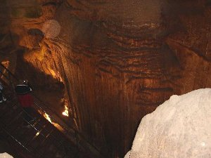
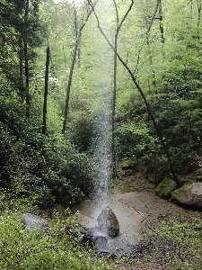
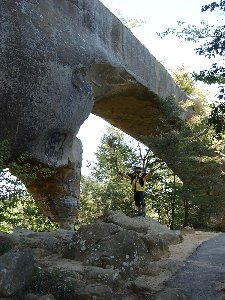
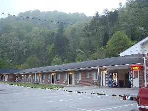

アメリカ遠征 | 2005年GW（ゴールデンウィーク） |
|---|---|
| G.Wは日本の本土はクライミングは元より観光にしろ、どこへ行っても混むので、大体毎年どこかへ逃亡している。 沖縄はもう何度も行ってしまっているし、他に遠方でどこか良さげな所を探していた。 海外旅行は好きだし、クライミングも趣味と言うことで、海外へのクライミングに絞り、色々検討した。 英語圏で有る事、クライミングシーズンで有る事、壁が長い事、オーバーハングしている事。 これらを全て網羅しようとすると、アメリカのレッド・リバー・ゴージュしか見つからなかった。 そんな訳でアメリカ・クライミングツアーへ行ってきました。 いや〜いろんな事ありましたよ。 | |
 レッド・リバー・ゴージュ（マザーロード、クライミング１） |  レッド・リバー・ゴージュ（マザーロード、クライミング２） |
| （レッド・リバー・ゴージュ）・・・北米の中で、クライミングエリアとしてはビックエリアの一つ（エリアが点在している。各エリア間は基本的に車での移動が必要な距離）。しかし、ここはクライマーのみでなく、カヌー、トレッキング、マウンテンバイク、４輪バギーまで出来るアウトドア天国だ。木々の種類が様々で、緑が美しく、新緑という言葉が全く無意味に思えた。SKY ＢＲＩＤＧＥ（自然の岩で出来た橋）等、見所もある。 ・乗り継ぎ時間が短い。やばいっ急げ！！ アメリカのデトロイトで国際線から、国内線へ乗り換える。この乗り換え時間は元々余裕なく（約１時間）、しかも 私達が乗った飛行機のデトロイトへの到着が遅れてしまった。到着後、急いで入国審査、荷物の受け取り・受け渡しをした後、国内線のゲートへ走った。しかし、この空港デカイ！！。出発ゲートは隅から隅まで１．６ｋｍも有って、国内線のゲートは一番奥にあるから中央から約８００ｍも行かないと着かない。重たい荷物を持ち、走り、汗だくになりながら、やっとそのゲートへ到着した。何とか、時間には間に合った。 ・雨で出鼻をくじかれる。 実質のアメリカ国内滞在期間は７日間。 その内、始めの２日間は雨でつぶれてしまう。痛いっ！！ 壁が被っているので雨でも登れるが、４月の長雨(宿のフロント談)で岩が湿気を吸ってしまって、駄目駄目。 ４月２９日（初日）、ヌンチャクが掛かっていたルート：Ｒｅｓｕｒｒｅｃｔｉｏｎ(１２ｃ)に触る。ホールドが滑りそうで恐くて、ヌンチャクを持ちながらクリップして 何とか最終ヌンチャクまで行く。しかし、終了点まで行く途中で６ｍほどフォールして終了。 | |
 レッド・リバー・ゴージュ（花） |  レッド・リバー・ゴージュ（川） |
| ・この洞窟確かにデカイのは分かるが・・・もう、飽きたよ。 ４月３０日（ ２日目）も先に書いたとおり、雨であったのでクライミングはやめて、マンモスケイブ国立公園へ行く。 世界最長と言われる洞窟だ（分かっているものだけでも、総延長距離５６０ｋｍ以上）。世界遺産にも登録されている。米英戦争時には兵器や火薬の貯蔵所として使用されていた。 そんな洞窟の４時間３０分のツアーに参加した。しかし、デカイのは分かったが、洞窟内の変化は少なく途中から飽きてしまった。２時間位のツアーもあるので、そちらで充分だった。 洞窟以外では園内を流れる川や森も美しく、トレイルを歩いたり、クルーズに乗ったり、カヌーをして楽しむのも非常に良い所だろう。アライグマ、コヨーテ、スカンク、等が生息しているらしい。 ・フリーウエー走行中、時速 ５ｍｉｌｅ オーバーでポリに捕まる。危うく・・・・ フリーウエー内はいつも制限時速以内で走っていたが、マンモスケイブの帰り少し遅くなってしまったので、時速５ｍｉｌｅほどスピードオーバーして走っていると突然、背後へパトに着かれサイレンを鳴らされた。 右側へ寄って車を止めると、パトからでかいポリが降りて近づいてくる。お〜映画みたいだよっと思いながら、日本の俺の点数どうなるんだろう？ とビビっていると、「どこへ行くんだ」「免許証を見せろ」とか聞いてくる。素直に従っていると、「スピードオーバーだったぞ。気を付けろよっ。」と言って、ごつい顔＆体に似合わず良い人ポリは何もせず去っていった。後で調べてみると、切符を切られたとしても、減点は無く、罰金のみ（約5000円）だった。ちなみに、ゴミのポイ捨ては約１０万円。日本もアメリカと同じにして欲しいと説に願う。 | |
|  マンモスケイブ |  岩場の滝 |
| ・別の用でポリにまた世話になる。 ５月１日（３日目）、マザーロード（エリア名）でクライミングの後、車の中へザックを置いて（当然貴重品は持っていった）、近くの別のエリアを徒歩で探しに行った。 それから１時間３０分ほどして帰ってくると、助手席側のウインドウに傷が付いており、更にドアがボコボコになっていた。 砂が付着していた事を考えると、見知らぬ人がそこら辺に転がっている石で叩いた事が容易に想像できた。さすがアメリカのレンタカーにはセキュリティーシステムが装備されていて、その程度で済んだのではないかと思った。 まあ、そんな訳で車上荒らしに遭ってしまったのだが、そのお陰で次の日（５月２日 ４日目）は交番や再度空港のレンタカー会社まで出向いて、車の交換 等で丸一日潰れてしまった。 ところで、アメリカの田舎では市役所、交番、等のお役所が一体になっているみたいで、ここでは同じ建物の中にあった。また、車上荒らし程度ではここアメリカでも捜査はしないみたいだ（レポートにＮｏ investigate と書いてあった）。 | |
|  ＳＫＹ Ｂｒｉｄｇｅ |  レキシントン（建物） |
| ・後半は風邪でふらふらの中、何とか１２ａは死守。 後半はレストを兼ねて、日帰りでシンシナティへ行く予定だったが、４日目から７日目（最終日）まで風邪（微熱付）を引いてしまって、それを断念した。 その代わり、５日目から７日目まで３日連続でクライミングへ行った。風邪で体がふらふらする中、１２ａをRPするのが精一杯で初日に手を付けた１２ｃは駄目でした。 （アメリカの良いところ） ・とにかく、何もかもがデカイです。人も、食べ物も、道も、牧場も、部屋も、壁も。 これだけデカイと人間大雑把になるの分かるなぁ。 この土地の雄大さは絶対日本では味わえないです。日本がホントちんけに思えてきてしまう。 （アメリカの今一な点） ・やっぱり食べ物ですね。食材を買うにしても、沢山有りすぎて何を買ったらよいか分からない。 食パンでもめちゃくちゃ種類が多い。しかも、口に合わない物が多い。また、牛乳は無調整の物が無い。 （まとめ） 充実度はクライミング５０％、旅９５％でした。クライミングは岩の状態が良くなった後半、逆に自分自身が本格的に風邪を引いてしまい、狙っていたルートをＲＰ出来なかった。しかし、最後まで諦めずに登った事はこれからの自分の力になるだろう。トラブルは遭いたくないものだが、逆にこれだけ色々と経験させてくれた旅もなかなか無い。素晴らしい旅でした。 | |
 |  宿（LI'L ABNER MOTEL） |
| 宿）・・・今回はクライミング友と２人だったため料金の安いモーテルへ泊まった （一泊：約２，５００円/人。キッチン無し）が、ある程度人数がまとま ればロッジを借りても良いと思う(ロッジはサテライトＴＶ、キッチン、ジャ グジー、暖炉、リビング 等があり、ちょ〜快適で、リッチらしい。２〜３ 人だとモーテル、キッチン無し部屋の約２倍の値段)。 ※フロントへキッチンは無いんですか？と訪ねるとキッチン付きの部屋 （一泊：約４，０００円/人）に有った、電子レンジをずっとただで貸してくれました。 （ＦＯＯＤ）・・・朝：パンにベーコン、レタス、チーズを挟んで食べてた。 ＋オレンジジュース、ＭＩＬＫ、果物。 昼：シリアル 夕：ほとんど毎日、手作りピザ屋（メニューはピザ、パスタ）。 ただし、ピザベースにトッピングは全て自分で選ぶので、 美味いかどうかは自分の想像力に掛かっている。 回数を重ねる事にトッピングのチョイスに磨きが掛かってくるので、 美味くなる（笑）。 （良いところ） ・とにかく、何もかもがデカイです。人も、食べ物も、道も、牧場も、部屋も、壁も。 これだけデカイと人間大雑把になるの分かるなぁ。 この土地の雄大さは絶対日本では味わえないです。日本がホントちんけに思えてきてしまう。 （今一な点） ・やっぱり食べ物ですね。食材を買うにしても、沢山有りすぎて何を買ったらよいか分からない。 食パンでもめちゃくちゃ種類が多い。 しかも、口に合わない物が多い。また、牛乳は無調整の物が無い。 （クライミング関係） ・岩質・・・砂岩 大きく前傾した壁に無数のポケットが開いていて、 いったいどのようにして形成されたのかと頭をひねる様な壁が続いている。 まさにポケットだらけなのである。 ホールド的にはピンチやスローパーも多い。 岩の色は赤みがかっていて、なんとも言えない雰囲気をかもしだしている。 ・エリア クライミングエリアは大小合わせて２０ほどあるが、マザーロードでしか登っていない。 ここはレッドリバーの看板エリア。馬蹄状になった大きな壁は、端から端まで歩くと10分くらいかかる。 右端に行くほど被っている。60本近くルートがあり、5.12，13台がひしめいている。 １１台は少ない。ハッキリ言って、凄い・凄い・凄い壁。 ・登ったルート（手を付けただけのルート含む） Ｉｎｊｕｒｅｄ Reserve（１１ａ）・・・☆☆ ２１ｍ ボルト ５本 核心はリーチ無いとグレードアップ？ 私には1１bに感じた。 Trad Ｓｕｃｋｅｒ（１１ｂ）・・・☆☆ １２ｍ ボルト ４本 左上する。ガバガバ。 Ｂｕｒｌｉｅｒ’ｓ Bane（１１ｃ）・・・☆☆？ １８ｍ ボルト ６本 左上する。被ったガバガバルート。 Ｋｉｃｋ Me Ｉｎ Ｔｈｅ Ｊｉｍｍｉｅ（１２ａ）・・・☆☆☆ １８ｍ ボルト ７本 左上する。基本的に被ったガバガバルートだが、 出だしと途中何回か細かいホールドが出てくる。 Ｒｅｓｕｒｒｅｃｔｉｏｎ(１２ｃ)・・・☆☆☆ ２４ｍ ボルト ７本 長く被っているが基本的にガバで、持久力勝負。 出だしと、中間部の細かいボールドが核心。 写真＆コメント Bｙ キッカー | |